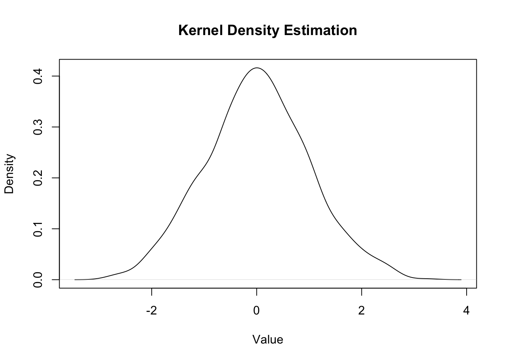
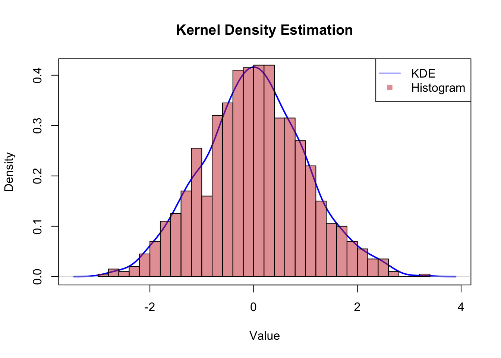
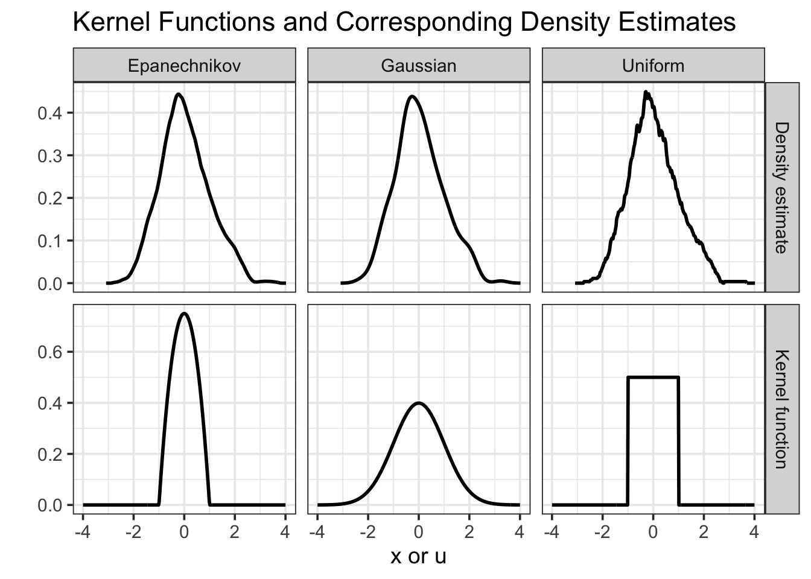
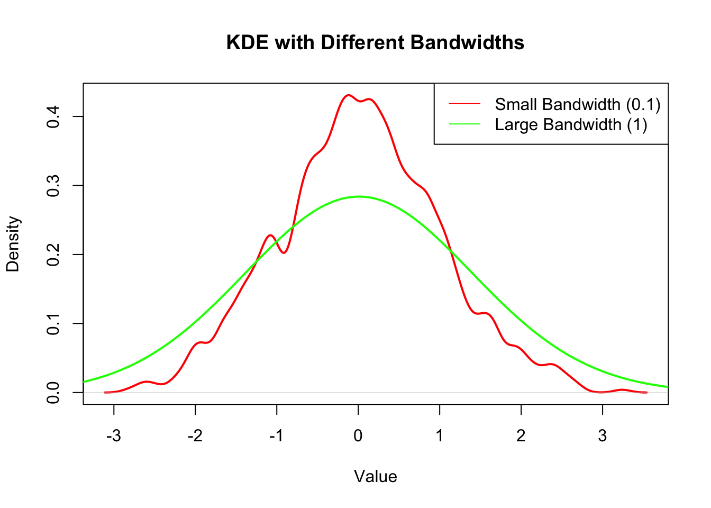
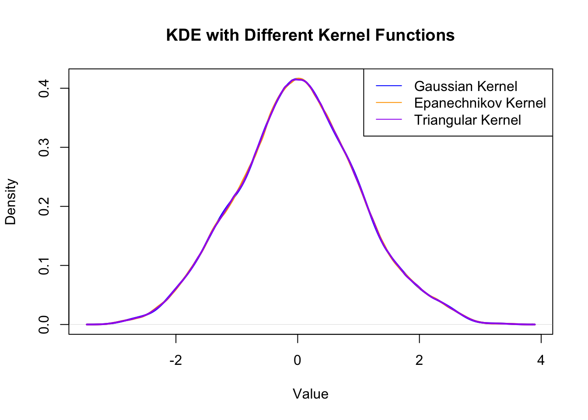
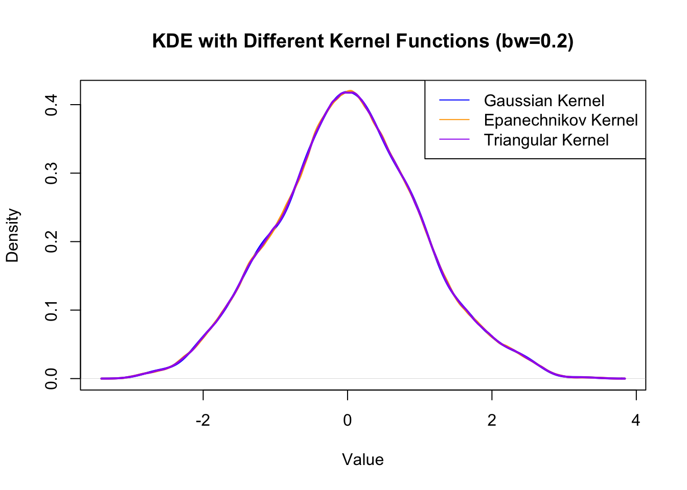
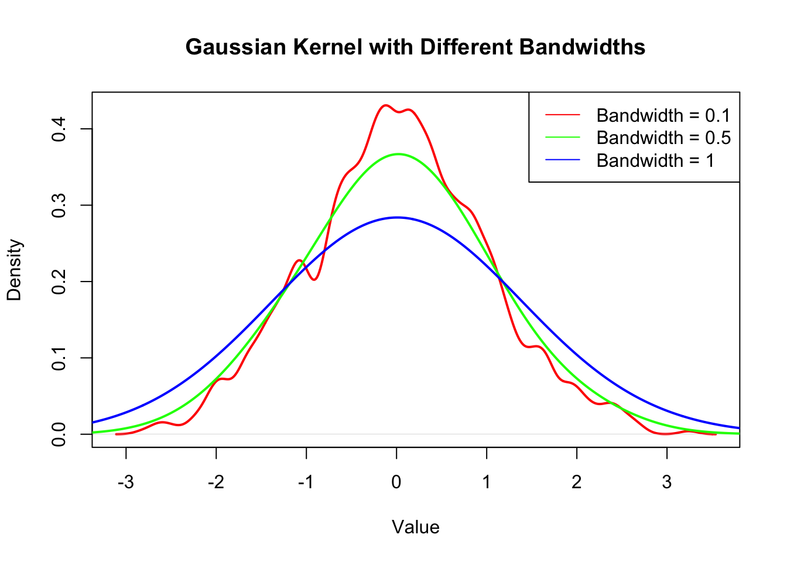
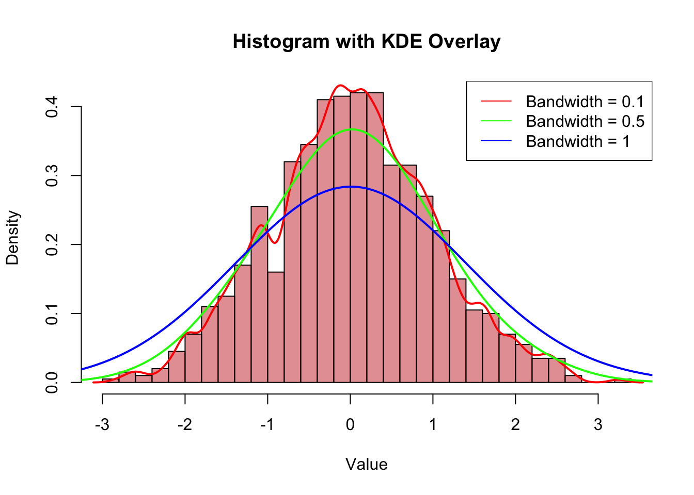

Up to now, we have discussed various statistical methods for estimating parameters, testing hypotheses, and making predictions based on observed data. However, in many real-world applications, we often encounter situations where we need to estimate the underlying probability distribution of a dataset without assuming a specific parametric form. This is where density estimation comes into play.
Density estimation is a fundamental technique in statistics that allows us to estimate the probability density function (PDF). We know that, density does not always exist!
There are two main types of density estimation methods:
Parametric Density Estimation: In this approach, we assume that the data follows a specific parametric distribution (e.g., normal, exponential, etc.) and estimate the parameters of that distribution using methods like Maximum Likelihood Estimation (MLE) or Method of Moments.
Non-Parametric Density Estimation: This approach does not assume any specific parametric form for the underlying distribution. Instead, it estimates the density directly from the data using techniques such as Kernel Density Estimation (KDE) or Histogram-based methods.
8.1 Kenel Density Estimation (KDE)
Kernel Density Estimation (KDE) is a popular non-parametric method for estimating the probability density function of a random variable. The basic idea behind KDE is to place a smooth kernel function (e.g., Gaussian, Epanechnikov, etc.) at each data point and then sum these kernels to obtain a smooth estimate of the density.
The KDE at a point \(x\) is given by: \[
\hat{f}(x) = \frac{1}{n h} \sum_{i=1}^{n} K\left(\frac{x - X_i}{h}\right),
\] where:
\(\hat{f}(x)\) is the estimated density at point \(x\),
\(n\) is the number of data points,
\(h\) is the bandwidth (smoothing parameter),
\(K\) is the kernel function,
\(X_i\) are the observed data points.
Properties of KDE:
The choice of kernel function \(K\) affects the smoothness of the estimated density. Common choices include Gaussian, Epanechnikov, and Uniform kernels.
The bandwidth \(h\) is a crucial parameter that controls the trade-off between bias and variance in the density estimate. A smaller bandwidth leads to a more detailed estimate (lower bias, higher variance), while a larger bandwidth results in a smoother estimate (higher bias, lower variance).
8.1.1 Example of using KDE in R
# Generate sample dataset.seed(123)data <-rnorm(1000, mean =0, sd =1)# Perform Kernel Density Estimationkde <-density(data, bw ="nrd0") # Using default bandwidth selection# Plot the resultsplot(kde, main ="Kernel Density Estimation", xlab ="Value", ylab ="Density")

# compare with the histogramplot(kde, main ="Kernel Density Estimation", xlab ="Value", ylab ="Density", col ="blue", lwd =2)hist(data, probability =TRUE, breaks =30, col =rgb(0.8, 0.2, 0.2, 0.5), add =TRUE)legend("topright", legend =c("KDE", "Histogram"), col =c("blue", rgb(0.8, 0.2, 0.2, 0.5)), lty =c(1, NA), pch =c(NA, 15))

8.2 Properties of the Kernel
A kernel function \(K\) must satisfy the following properties:
Non-negativity: \(K(u) \geq 0\) for all \(u\).
Normalization: The integral of the kernel function over its entire domain must equal 1: \[
\int_{-\infty}^{\infty} K(u) \, du = 1.
\]
Symmetry: The kernel function should be symmetric around zero: \[
K(u) = K(-u).
\]
Uniform Kernel: \[
K(u) = \frac{1}{2} \text{ for } |u| \leq 1, \text{ and } 0 \text{ otherwise.}
\]
library(ggplot2)library(dplyr)library(tidyr)# --- Kernel functions ---gaussian_kernel <-function(u) { (1/sqrt(2* pi)) *exp(-0.5* u^2)}epanechnikov_kernel <-function(u) {ifelse(abs(u) <=1, 0.75* (1- u^2), 0)}uniform_kernel <-function(u) {ifelse(abs(u) <=1, 0.5, 0)}# Grid of points for kernelsx_kernel <-seq(-4, 4, length.out =400)# Data frame for kernel functionsdf_kernel <-tibble(x = x_kernel,Gaussian =gaussian_kernel(x_kernel),Epanechnikov =epanechnikov_kernel(x_kernel),Uniform =uniform_kernel(x_kernel)) |>pivot_longer(cols =-x, names_to ="Kernel", values_to ="value") |>mutate(Type ="Kernel function")# --- Density estimation using different kernels ---set.seed(123)sample_data <-rnorm(300, mean =0, sd =1) # some example datadens_gauss <-density(sample_data, kernel ="gaussian", n =400)dens_epa <-density(sample_data, kernel ="epanechnikov", n =400)# 'Uniform' ≈ 'rectangular' kernel in base::density()dens_uni <-density(sample_data, kernel ="rectangular", n =400)df_dens <-bind_rows(tibble(x = dens_gauss$x, value = dens_gauss$y, Kernel ="Gaussian"),tibble(x = dens_epa$x, value = dens_epa$y, Kernel ="Epanechnikov"),tibble(x = dens_uni$x, value = dens_uni$y, Kernel ="Uniform")) |>mutate(Type ="Density estimate")# --- Combine and plot ---df_all <-bind_rows(df_kernel, df_dens)ggplot(df_all, aes(x = x, y = value)) +geom_line(linewidth =1) +facet_grid(Type ~ Kernel, scales ="free_y") +labs(x ="x or u",y ="",title ="Kernel Functions and Corresponding Density Estimates" ) +theme_bw(base_size =14)

8.2.2 Bandwidth Selection
Choosing an appropriate bandwidth is critical for obtaining a good density estimate. Several methods exist for bandwidth selection, including:
Rule of Thumb: A simple method based on the standard deviation and sample size.
Cross-Validation: A data-driven approach that minimizes the integrated squared error.
Plug-in Methods: These methods estimate the optimal bandwidth based on the data’s characteristics.
8.2.3 Example of Bandwidth Selection in R
# Generate sample dataset.seed(123)data <-rnorm(1000, mean =0, sd =1)# Perform KDE with different bandwidthskde_small_bw <-density(data, bw =0.1)kde_large_bw <-density(data, bw =1)# Plot the resultsplot(kde_small_bw, main ="KDE with Different Bandwidths", xlab ="Value", ylab ="Density", col ="red", lwd =2)lines(kde_large_bw, col ="green", lwd =2)legend("topright", legend =c("Small Bandwidth (0.1)", "Large Bandwidth (1)"), col =c("red", "green"), lty =1)

Other Kernel Functions
Epanechnikov Kernel
Uniform Kernel
Triangular Kernel ### Example of Different Kernel Functions in R
# Generate sample dataset.seed(123)data <-rnorm(1000, mean =0, sd =1)# Perform KDE with different kernel functionskde_gaussian <-density(data, kernel ="gaussian")kde_epanechnikov <-density(data, kernel ="epanechnikov")kde_triangular <-density(data, kernel ="triangular")# Plot the resultsplot(kde_gaussian, main ="KDE with Different Kernel Functions", xlab ="Value", ylab ="Density", col ="blue", lwd =2)lines(kde_epanechnikov, col ="orange", lwd =2)lines(kde_triangular, col ="purple", lwd =2)legend("topright", legend =c("Gaussian Kernel", "Epanechnikov Kernel", "Triangular Kernel"), col =c("blue", "orange", "purple"), lty =1)

## choose different bandwidthkde_gaussian_bw <-density(data, kernel ="gaussian", bw =0.2)kde_epanechnikov_bw <-density(data, kernel ="epanechnikov", bw =0.2)kde_triangular_bw <-density(data, kernel ="triangular", bw =0.2)# Plot the resultsplot(kde_gaussian_bw, main ="KDE with Different Kernel Functions (bw=0.2)", xlab ="Value", ylab ="Density", col ="blue", lwd =2)lines(kde_epanechnikov_bw, col ="orange", lwd =2)lines(kde_triangular_bw, col ="purple", lwd =2)legend("topright", legend =c("Gaussian Kernel", "Epanechnikov Kernel", "Triangular Kernel"), col =c("blue", "orange", "purple"), lty =1)

## Show the difference of one kernel with three bandwidthskde_gaussian_bw1 <-density(data, kernel ="gaussian", bw =0.1)kde_gaussian_bw2 <-density(data, kernel ="gaussian", bw =0.5)kde_gaussian_bw3 <-density(data, kernel ="gaussian", bw =1)# Plot the resultsplot(kde_gaussian_bw1, main ="Gaussian Kernel with Different Bandwidths", xlab ="Value", ylab ="Density", col ="red", lwd =2)lines(kde_gaussian_bw2, col ="green", lwd =2)lines(kde_gaussian_bw3, col ="blue", lwd =2)legend("topright", legend =c("Bandwidth = 0.1", "Bandwidth = 0.5", "Bandwidth = 1"), col =c("red", "green", "blue"), lty =1)

## show the underlying datahist(data, probability =TRUE, breaks =30, col =rgb(0.8, 0.2, 0.2, 0.5), main ="Histogram with KDE Overlay", xlab ="Value", ylab ="Density")lines(kde_gaussian_bw1, col ="red", lwd =2)lines(kde_gaussian_bw2, col ="green", lwd =2)lines(kde_gaussian_bw3, col ="blue", lwd =2)legend("topright", legend =c("Bandwidth = 0.1", "Bandwidth = 0.5", "Bandwidth = 1"), col =c("red", "green", "blue"), lty =1)

8.3 Other ways
Besides KDE, there are other methods for density estimation, including:
Histogram-based Methods: Dividing the data range into bins and counting the number of observations in each bin to estimate the density.
Nearest Neighbor Methods: Estimating the density based on the distance to the nearest neighbors.
Spline-based Methods: Using spline functions to create smooth density estimates.
Mixture Models: Modeling the data as a mixture of several distributions (e.g., Gaussian Mixture Models).